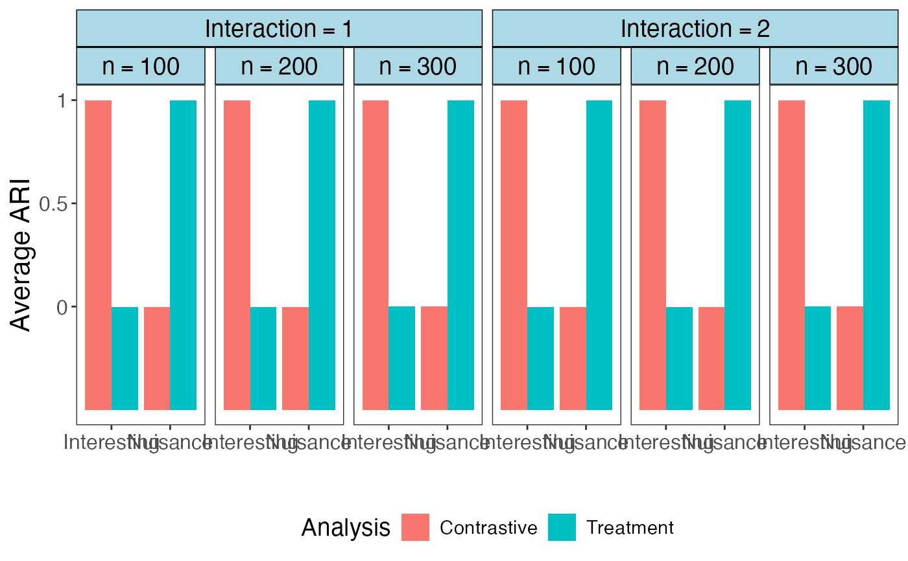

sim_cPCA.RdThis function performs simulation to prove the removal of nuisance factor and discovery of hidden factor by using cPCA and eta tuning algorithm.
sim_cPCA(
gnt,
gnc,
p,
q,
t,
sigma_1t,
sigma_2t,
sigma_3t,
sigma_1c,
sigma_2c,
sigma_3c,
Sigma_t = NULL,
Sigma_c = NULL,
beta_11,
beta_12,
beta_21,
beta_22,
gamma_11,
gamma_12,
gamma_21,
gamma_22,
eta,
repetition = 10,
save_plot = FALSE
)sample size for treatment group.
sample size for control group.
number of features that do not differs with respect any subgroups.
number of features that differs with respect to interesting subgroups.
number of features that differs with respect to nuisance subgroups.
standard deviation of the first p features in treatment group.
standard deviation of the second q features in treatment group.
standard deviation of the third t features in treatment group.
standard deviation of the first p features in control group.
standard deviation of the second q features in control group.
standard deviation of the third t features in control group.
the error covariance matrix in treatment group, if is NULL, use standard deviation specified and assume uncorrelation.
the error covariance matrix in control group, if is NULL, use standard deviation specified and assume uncorrelation.
mean of the first interesting subgroup in treatment group.
mean of the second interesting subgroup in treatment group.
mean of the first interesting subgroup in control group.
mean of the second interesting subgroup in control group.
mean of the first nuisance subgroup in treatment group.
mean of the second nuisance subgroup in treatment group.
mean of the first nuisance subgroup in control group.
mean of the second nuisance subgroup in control group.
if eta is a vector, eta_tuning algorithm will be called to select optimal eta; if a number, eta will be used.
number of replications of the simulation.
logical, whether save the score plot and loading plot for the first replication.
A data frame containing the selected optimal eta, the four metrics values.
library(CEA)
library(ggplot2)
library(tidyverse)
library(ggsci)
library(ggh4x)
#>
#> Attaching package: ‘ggh4x’
#> The following object is masked from ‘package:ggplot2’:
#>
#> guide_axis_logticks
beta_12_candidates <- c(11, 12)
n_candidates <- c(300, 200, 100)
p_candidates <- c(10)
eta_range <- seq(0.1, 5, 0.05)
results <- setNames(data.frame(matrix(ncol = 8, nrow = 0)),
c("ARI_ctst_discovery", "ARI_ctst_nuisance",
"ARI_trt_discovery", "ARI_trt_nuisance","eta",
"beta12", "SampleGroupSize", "FeatureGroupSize"))
for (beta_12 in beta_12_candidates) {
for (n in n_candidates) {
for(p in p_candidates){
res <- sim_cPCA (gnt = n, gnc = n, p = p, q = p, t = p,
sigma_1t = 1, sigma_1c = 1, sigma_2t = 1,
sigma_2c = 1, sigma_3t = 1, sigma_3c = 1,
Sigma_t = NULL, Sigma_c = NULL,
beta_11 = 7, beta_12 = beta_12, beta_21 = 3, beta_22 = 6,
gamma_11 = -3, gamma_12 = 3, gamma_21 = -3, gamma_22 = 3,
eta = eta_range, repetition = 10,
save_plot = FALSE)
res$beta_12 <- beta_12
res$SampleGroupSize <- n
res$FeatureGroupSize <- p
results <- rbind(results, res)
}
}
}
#> Use optimal eta: 0.85
#> Seleted optimal eta is GoodEta
#> Use optimal eta: 1.3
#> Seleted optimal eta is GoodEta
#> Use optimal eta: 0.9
#> Seleted optimal eta is GoodEta
#> Use optimal eta: 1.9
#> Seleted optimal eta is GoodEta
#> Use optimal eta: 1.9
#> Seleted optimal eta is GoodEta
#> Use optimal eta: 1.15
#> Seleted optimal eta is GoodEta
plot_results <- pivot_longer(results, 1:4, names_to = "Type", values_to = "ARI")
plot_results$Analysis <- sapply(plot_results$Type, function(x){strsplit(x,"_")[[1]][2]})
plot_results$Factor <- sapply(plot_results$Type, function(x){strsplit(x,"_")[[1]][3]})
plot_results$Analysis <- ifelse(plot_results$Analysis=="ctst","Contrastive","Treatment")
plot_results$Factor <- ifelse(plot_results$Factor=="discovery","Interesting","Nuisance")
plot_results$eta <- paste("eta==", plot_results$eta, sep = "")
plot_results$beta_12_num <- plot_results$beta_12
plot_results$beta_12 <- paste("beta[12]==", plot_results$beta_12, sep = "")
plot_results$SampleGroupSize <- paste("n==", plot_results$SampleGroupSize, sep = "")
print(knitr::kable(plot_results %>% group_by(beta_12, Factor, Analysis) %>% summarise(Average_ARI = mean(ARI), SE_ARI = sd(ARI))), format = "markdown")
#> `summarise()` has grouped output by 'beta_12', 'Factor'. You can override using
#> the `.groups` argument.
#>
#>
#> |beta_12 |Factor |Analysis | Average_ARI| SE_ARI|
#> |:------------|:-----------|:-----------|-----------:|---------:|
#> |beta[12]==11 |Interesting |Contrastive | 1.0000000| 0.0000000|
#> |beta[12]==11 |Interesting |Treatment | -0.0015333| 0.0007256|
#> |beta[12]==11 |Nuisance |Contrastive | -0.0015333| 0.0007256|
#> |beta[12]==11 |Nuisance |Treatment | 1.0000000| 0.0000000|
#> |beta[12]==12 |Interesting |Contrastive | 1.0000000| 0.0000000|
#> |beta[12]==12 |Interesting |Treatment | -0.0015333| 0.0007256|
#> |beta[12]==12 |Nuisance |Contrastive | -0.0015333| 0.0007256|
#> |beta[12]==12 |Nuisance |Treatment | 1.0000000| 0.0000000|
plot_results <- plot_results %>% group_by(beta_12, Factor, SampleGroupSize, Analysis) %>% summarise(Average_ARI = mean(ARI), SE_ARI = sd(ARI))
#> `summarise()` has grouped output by 'beta_12', 'Factor', 'SampleGroupSize'. You
#> can override using the `.groups` argument.
plot_results$Interaction <- ifelse(plot_results$beta_12=="beta[12]==11", "Interaction==1","Interaction==2")
ggplot(plot_results)+
geom_bar(aes(x = Factor, fill = Analysis, y = Average_ARI+0.5), stat="identity", position ="dodge")+
facet_nested( ~ Interaction + SampleGroupSize, labeller = label_parsed)+
labs(x = "", y="Average ARI")+
scale_y_continuous(breaks = c(0.5,1,1.5), limits = c(0,1.5), labels=c("0","0.5","1"))+
theme_bw()+
theme(
panel.grid = element_blank(),
strip.background = element_rect(fill = "lightblue", color = "black"),
strip.text = element_text(color = "black", face = "bold", size = 14),
text = element_text(size = 14), # Adjust text size
axis.title = element_text(size = 16), # Adjust axis title size
axis.text = element_text(size = 12), # Adjust axis text size
legend.position = "bottom"
)+
scale_color_aaas()
